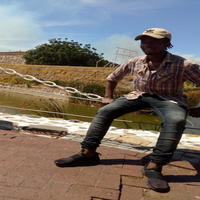

Parliament of RSA
1. The Parliament of South Africa is South Africa's legislature and under the country's current Constitution is composed of the National Assembly and the National Council of Provinces.
2. It has undergone many transformations as a result of the country's tumultuous history. From 1910 to 1994, it was elected mainly by South Africa's white minority, before the first elections with universal suffrage were held in 1994.
3. Parliament sits in Cape Town, even though the seat of government is in Pretoria. This dates back to the foundation of the Union, when there was disagreement among the four provinces as to which city would be the national capital. As a compromise, Cape Town was designated the legislative capital, Bloemfontein the judicial capital, and Pretoria the administrative capital. The African National Congress (ANC) government has proposed moving Parliament to Pretoria, arguing that the present arrangement is cumbersome as ministers, civil servants and diplomats must move back and forth when Parliament is in session.
Long Street

1. Long Street is a major street located in the City Bowl section of Cape Town, South Africa. It is famous as a bohemian hang out and the street is lined with many book stores, various ethnic restaurants and bars. Restaurants include African restaurants such as Zula, and Indian restaurants such as Masala Dosa. Long Street exhibits a diversified culture and attracts tourists from all over the world. It also has a number of youth hostels which provide accommodation to an international roster of guests. Several theatres which showed anti-apartheid plays were located on the street during the 1970s and 1980s, although most have now closed and been replaced by restaurants or stores.
2. Architecturally it is noted for its Victorian buildings with wrought iron balconies. These were featured in an article in an edition of the annual publication The Saturday Book.
3. Traffic on Long Street is one-way in the uphill (southwest) direction, while the parallel Loop Street carries downhill traffic. The number 101 MyCiTi bus runs the length of Long Street on its way from the Civic Centre to Gardens, with five stops along the street.
Bo-Kaap

1. The Bo-Kaap is an area of Cape Town, South Africa formerly known as the Malay Quarter. It is a former township, situated on the slopes of Signal Hill above the city centre and is a historical centre of Cape Malay culture in Cape Town. The Nurul Islam Mosque, established in 1844, is located in the area.
2. Bo-Kaap is traditionally a multicultural area. The area is known for its brightly coloured homes and cobble stoned streets. Bo-Kaap primary colours
3. As a result of Cape Town's economic development and expansion, and after the demise of forced racial segregation under apartheid, property in the Bo-Kaap has become very sought after, not only for its location but also for its picturesque cobble-streets and unique architecture.[2] Increasingly, this close-knit community is "facing a slow dissolution of its distinctive character as wealthy outsiders move into the suburb to snap up homes in the City Bowl at cut-rate prices".[3] Inter-community conflict has also arisen as some residents object to the sale of buildings and the resultant eviction of long-term residents.